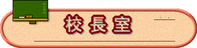

 |
| 向 山小学校は、全校児童約２７４名、各学年２クラス、全校１２学級の学校です。ｊｒ津田沼駅に近い都会的な場所にあるのもかかわらず、狸やコゲラが住めるほどの自然環境に恵まれ、子ども達も元気に伸び伸びと学校生活を送っています。 |
| 学 校経営の柱には「希望の登校、満足の下校」を掲げ、児童一人ひとりが「学校が楽しい。学校に来てよかった。また明日も来たい。」と心から感じられる学校を目指します。 |
| 豊 かな心を育むことをねらいとし、１年から６年までの異年齢集団によるなかよしグループ活動を行っています。全校児童によるなかよし徒歩遠足、なかよし運動会、児童会活動などを行い子どもたち同士の関わりを深めています。 |
| １０ 月には全校で行う「わくわく鹿野山」を実施します。その活動を通して、どの子も自分に自信を持ち、お互いを認め合い助け合っていける子に成長していきます。平成２４年度からは児童数の増加にともない、１年から３年までは一日目の活動後に日帰りとなりました。上学年のいない二日目と三日目は３年生がリーダーとなり、校内で活動を実施しています。 |
| 教 育課程特例校の指定を受け、一年生から一貫したカリキュラムによる英語教育を実践することで、英語のコミュニケーションができる児童の育成をめざしています。また、英語ルームの設置、充実させるとともに、altや地域ボランティアの協力を得て授業を行うなど、英語に慣れ親しむ環境づくりにつとめています。 |
| 本 校では、４月より全校でこぶしっ子マラソンに挑戦しています。毎月目標を設定し、達成した子どもを全校集会で賞賛したり、達成度がわかる掲示物を工夫したりして意欲化を図っています。子どもたちの努力が結果として校内マラソン大会や、スポーツテストの記録となって表れています。 |
| 本 校は昨年度創立４０周年を迎えました。その周年行事を通し、地域と連携しながら伝統の継承、再発見ができ、向山地域の一体感を感じる良い機会となりました。平成１６年から本校は、市内どこの地域からも通学できる小規模特認校となりました。本年度は学級数も１２学級となり、小規模とは言えない学校となってきましたが、個々の子どもに行き届いた教育を実践している小学校を望む方は、是非向山小学校においでください。 |